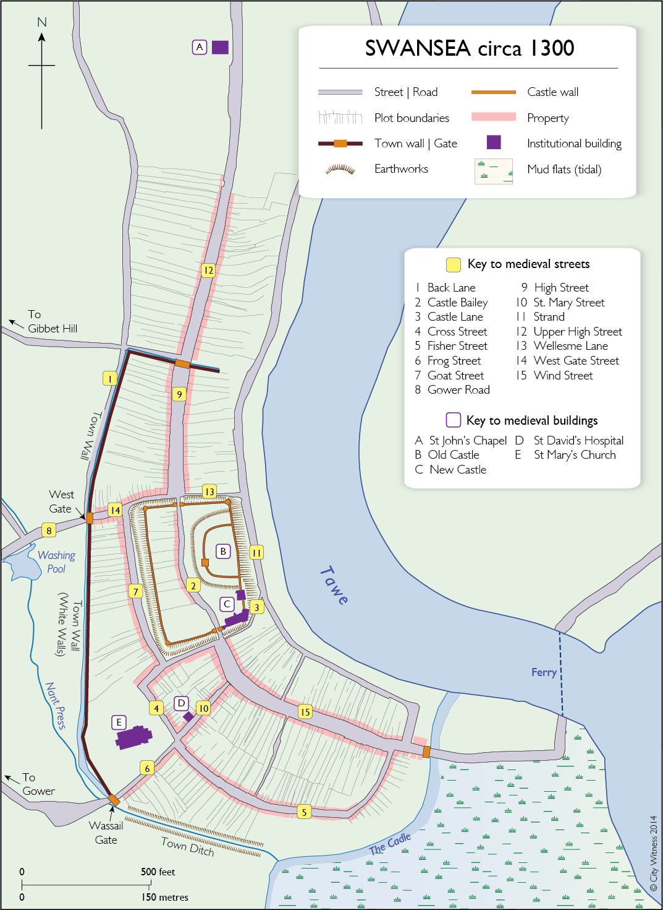
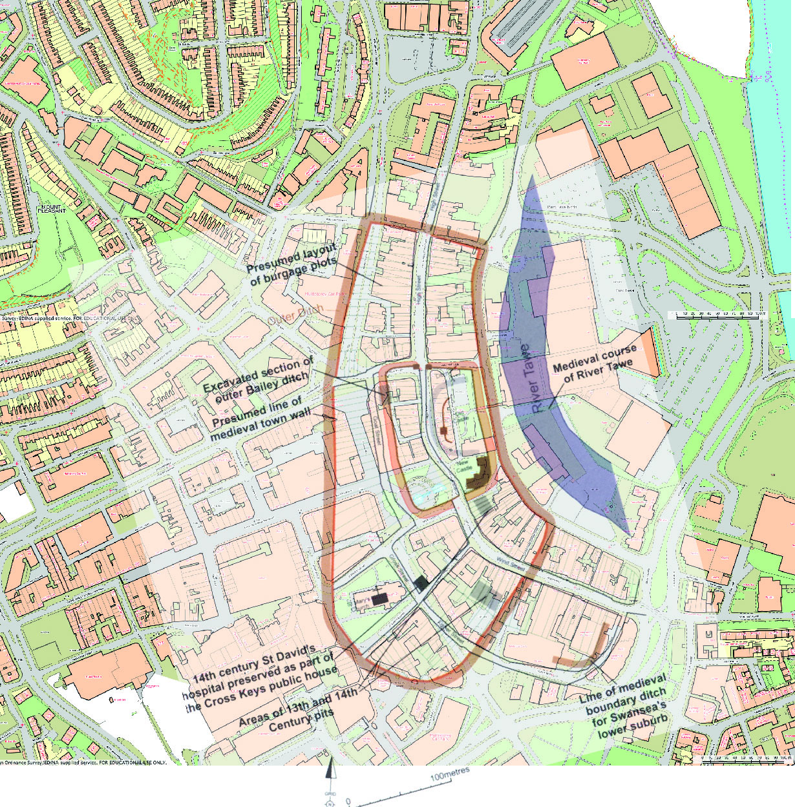
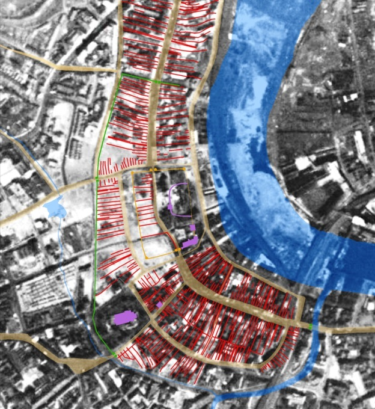
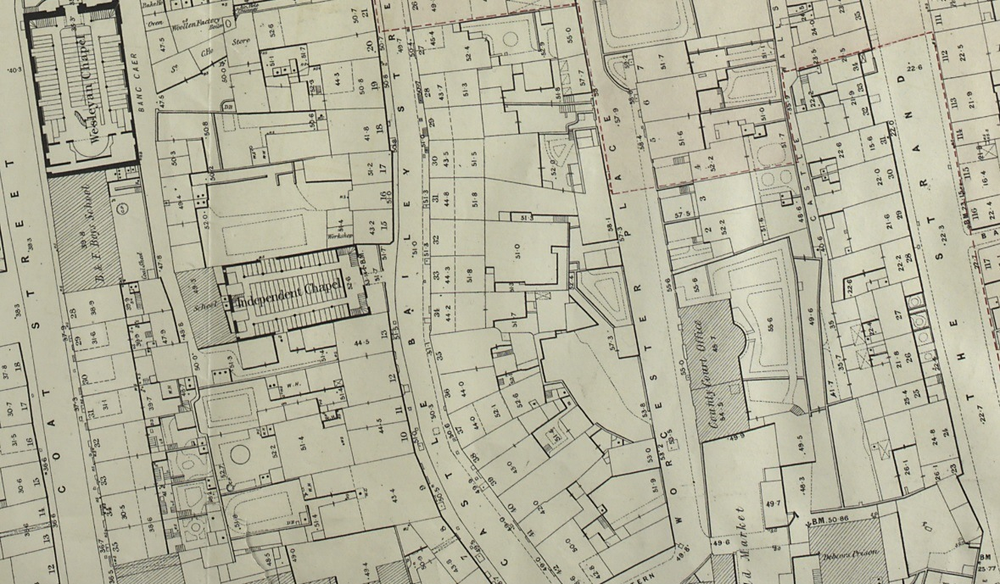
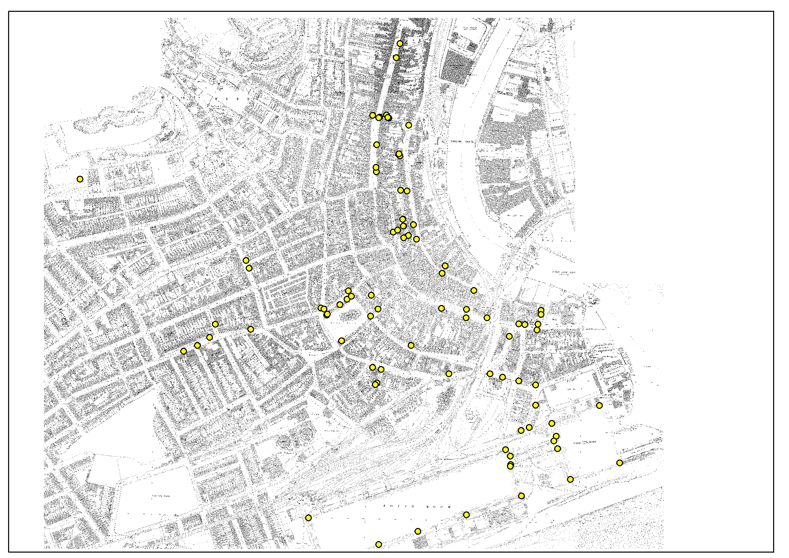
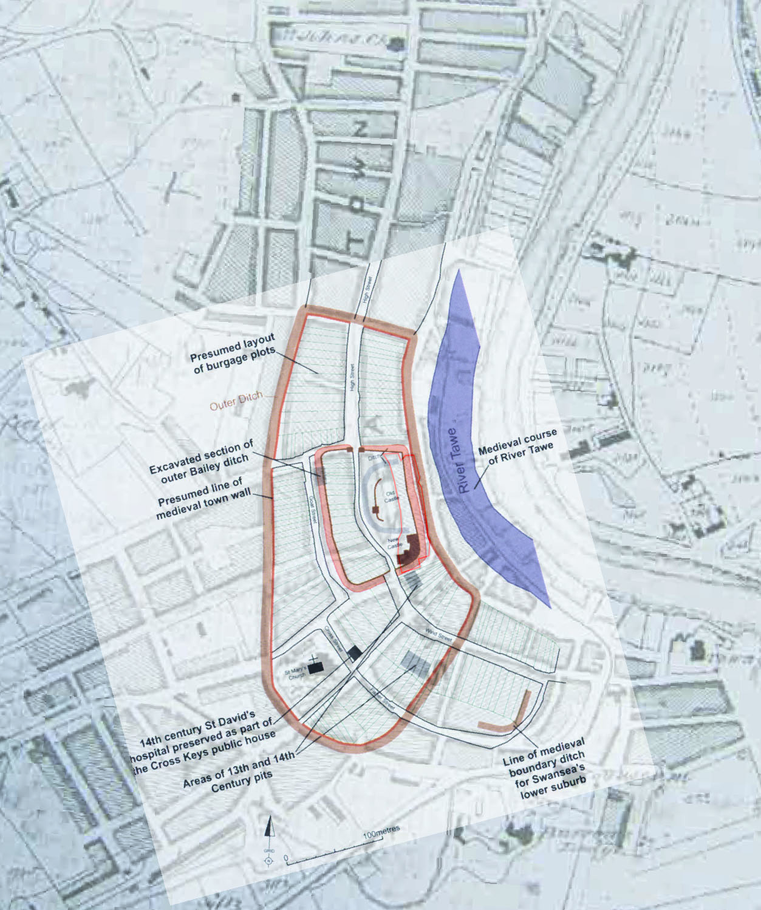
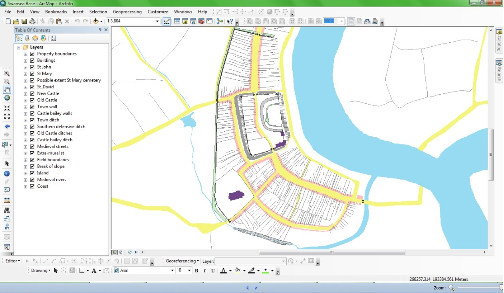
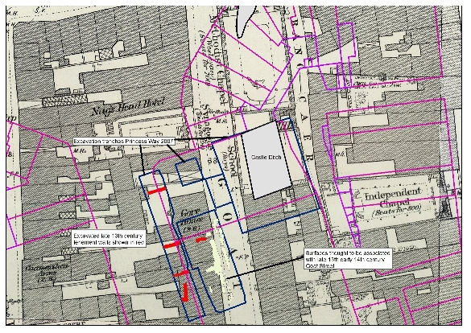
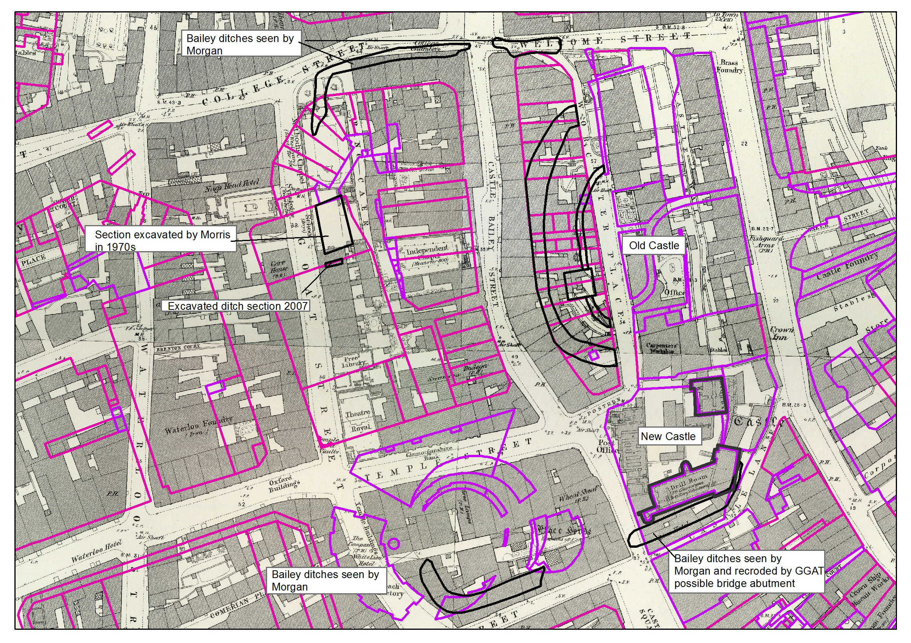

Mapping Medieval Swansea
Gareth Dean and Keith Lilley
In mapping the landscape of medieval Swansea the project has created a detailed map showing the town as it was in around 1300, shortly before the time of Cragh’s hanging.

The means by which this map of medieval Swansea was made draws upon a long history of using maps to reveal the histories of places. It is a technique that involves using historic maps, along with written and archaeological sources, as a basis to reconstruct a town’s medieval layout and urban features. Here we describe what this process of map-making involved, partly by way of explanation of how the project’s digital mapping was derived, but also to offer others the scope of repeating these approaches to undertake similar work elsewhere, for other historic towns and cities.
The City Witness map showing Swansea circa 1300 is a wholly new view of the medieval town. Previous attempts to map the medieval town have appeared over the years, from small-scale sketch maps through to archaeologically-derived maps showing the town in some detail.

The approach taken for the City Witness project was to go back to the historical, archaeological and cartographic evidence and to look at this afresh, to see what is revealed by combining this material together to create a new map. The way the source material was combined used a Geographical Information System (GIS), a novel approach in mapping medieval Swansea and employed for the first time to study its urban landscapes.
A plan analysis of Swansea
Writing on medieval Swansea, Robinson observed, ‘Few of the historic towns of Wales have more completely obliterated remains of their medieval past than Swansea’. The extent of the city’s destruction through bombing raids in the Second World War is clear from aerial photographs taken just after the war. Large areas that were once the historic core of Swansea were erased from the modern landscape, and in their place a new urban landscape transformed the city centre as part of its post-war reconstruction programme, thus further eroding the few surviving physical legacies of the medieval town.

One of the research aims of the City Witness project was to map in detail what medieval Swansea’s urban landscape looked like, as well as establish how it developed - to map the ‘lost’ medieval town onto the modern city that exists today. The basis of the method used in mapping medieval Swansea is a geographical technique called ‘town-plan analysis’ which uses historic maps to provide a starting point from which to work back to the Middle Ages. These historic maps, or rather plans, of Swansea show in great detail the physical features that made up its urban landscape, in particular its streets, plots, and buildings. The principle of the town-plan analysis technique is that the shapes and forms of these urban features – in towns of medieval origins – are inherited from the time when they were laid down in the past, potentially centuries ago. A plan-analysis involves studying the shapes and forms of these features, through mapping them out.
In Swansea’s case, the historic maps used for the plan-analysis work comprise large-scale plans of nineteenth-century date, including Ordnance Survey 1:500 scale plans of 1879 and 1880, kindly provided to the project by the Bodleian Library in Oxford, and 1:528 scale Board of Health plans of 1852, kindly supplied by West Glamorgan Archives. Further historic maps of the town include the 1843 Tithe Maps, as well as other manuscript maps of the early-nineteenth century (supplied from National Library of Wales).

Compared with other historic towns and cities, Swansea is not somewhere especially well-endowed with early maps, with most dating only from the mid-nineteenth century onwards, after development in the mid-eighteenth century had established new streets, primarily to the west of the older centre of the town in the area around Oxford Street. Yet these maps were, nevertheless, very useful historic sources for the plan-analysis work since they pre-date the period when Swansea’s urban landscape really began to be transformed by the development of industry, notably copper, which led to significant changes to the river Tawe in the 1840s and the large scale redevelopment of the docks from the 1870s. Further stimulation for urban development came following the arrival of the railway in 1855. For this reason, the plan analysis work was largely based on the very accurately surveyed and drawn Board of Health plans of the town, rather than the slightly later OS 1:500 plans.
Using a Geographical Information System (GIS)
All of the historic maps were acquired as digital (‘raster’) images and imported into the GIS software (in this case ArcGIS 10.1). The rasters were then georectified using the GIS software, a process that revealed how spatially-accurate the 1852 Board of Health plans are (more so than the Tithe Award map). To help with georectifying historic map rasters, a field survey was carried out in Swansea using GNSS (Global Navigation Satellite System) surveying equipment.

For this, the positions of selected sites (the yellow spots on the above map) are surveyed and their geographic coordinates used to establish ground control points which help to assess the spatial and geodetic accuracy of the scanned historic maps used in the digitisation work.

Following on from this, the georectified maps, especially the Board of Health plans, Swansea’s streets and plots were selectively digitized in the GIS at Queen’s University Belfast. In completing this digitising work, previous research on the layout of medieval Swansea provided a useful guide to identify the maximum spatial extent of the town during the Middle Ages.
A process of selective digitisation of urban features from the digital map-image (‘raster’) produces digital map data (‘vectors’), and in the GIS – which is essentially a spatial database – these vectors are grouped as ‘layers’, one each created for the digitised streets and plots. Of course, at this initial stage in the mapping process, the digitised streets and plots in the GIS reflect the situation in the nineteenth century, at the time of the 1852 survey. Since the aim of using the plan-analysis is to show the town’s medieval layout only those areas known from documentary and archaeological sources to have been built up at that time had streets and plots digitised.

Even at this initial stage of the mapping process, removing just the patterns of streets and plots from the Board of Health plans, reveals an interesting ‘skeleton’ of the town, its framework within which the town’s buildings sit. Buildings were also digitised in the same way, to form a layer in the GIS, but buildings are more prone to renewal and change over time than are either streets or plots. In the mapping work then, the buildings layer was largely used simply to help give some impression of the likely footprint of Swansea’s built-up frontages along the town’s main medieval streets.

To be sure that the mapped, and digitised, streets and plots reflect likely medieval patterns and forms requires bringing into the GIS not just historic maps of the town but also evidence derived archaeological excavations and observations. For Swansea, excavations in the town have taken place since the late nineteenth century. The most recent systematic archaeological work in the town was made available to the City Witness project through the invaluable support and assistance of Glamorgan-Gwent Archaeological Trust (GGAT), through supplying plans of excavations, some unpublished, as well as copies of their excavation and watching-brief reports, both published and unpublished.

The advantage offered by using archaeological plans is that they allow greater confidence in mapping medieval urban features. Combining more recent archaeological excavations with earlier observations, such as those by Morgan, confirms and corroborates (for many parts of Swansea) the medieval antecedents of the town’s street and plot patterns, as digitised from the nineteenth-century maps. This is the case in the areas of Goat Street, Fisher Street and Wind Street, for example, where GGAT excavated a number of sites, the results of which proved invaluable sources of information for mapping the medieval urban landscape and modelling its suggested development. These sites and others in the town confirmed the locations and alignment of lost medieval urban defences, such as the town’s walls and gates, its defensive ditches, and those of the Old and New Castle. Without having these archaeological data, the mapping of medieval Swansea would have been much more difficult and far less reliable.

The archaeological research undertaken by GGAT also helps in the plan-analysis of the town, for the excavated features and contents provide often the only means of dating when parts of the town were first developed during the Middle Ages. The various patterns of streets and plots revealed by the plan-analysis show that far from being uniform in its appearance the urban landscape of medieval Swansea had distinctively-shaped areas, called ‘plan-units’ in a plan analysis, each potentially indicating a stage in the town’s medieval growth.

While these medieval urban growth-stages are not documented in Swansea’s case, the combination of the results of urban archaeology with the plan-analysis and its ‘plan-units’, allows some possibility of suggesting how the town took shape during the Middle Ages. (For more on this see the Development of Medieval Swansea and Viking Swansea).
An evolving map?
In sum, the City Witness map of Swansea of circa 1300 is but one interpretation of the town based upon the available evidence and using plan-analysis and GIS. The 1300 map gives a snapshot of the evolving townscape, as older urban features were redeveloped and new ones inserted. As further sites in the town are excavated, in the future, or as new historical sources come to light, so we expect our map of the medieval town will require updating and changing. One advantage of working with digital maps and GIS is that new sources of information can be readily incorporated into the existing database. Revisions can then be made, both to the mapped features and to their interpretation, offering further ideas of how the town developed during the Middle Ages.
Rather than marking either a start or an end point then, the mapping work carried out as part of the City Witness project instead reflects a stage in a long and on-going tradition of mapping medieval Swansea. As well as the project’s new map of Swansea circa 1300, the interactive map featured here similarly represents a stage in developing further ways of mapping out medieval Swansea. This is not just because it is derived using digital approaches and GIS, but because the interactive map relies on its users making their own choices about what is viewed and made visible and what is not. Each time the interactive map is engaged with different historical insights and interpretations will evolve, and from these interactions yet further mappings of medieval Swansea emerge.